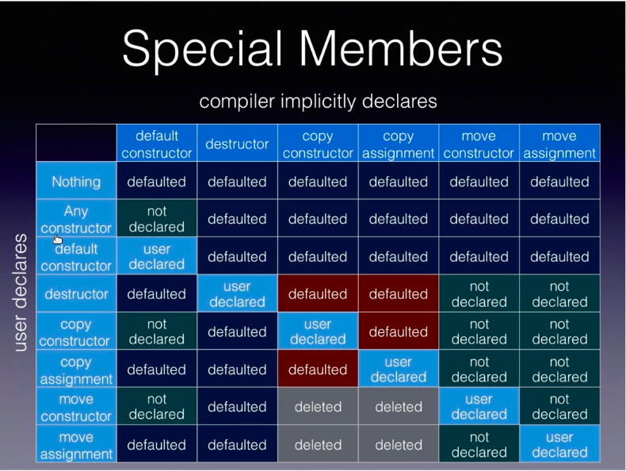

构造函数
- 代理构造函数(C++11)
- 初始化列表
- 提高代码性能
- 类中的引用成员必须使用初始化列表进行初始化
- 类成员的初始化顺序与声明的顺序一致，与其在初始化列表中的顺序无关
class Str { public: Str(size_t input):y(input), x(y + 1) { std::cout << x << " " << y << std::endl; } private: size_t x; size_t y; }; // 打印结果是：4199057 4 // 因为x和y的初始化顺序是先初始化x，再初始化y，而初始化x时，y还没被初始化，所以y+1的结果是个随机值 - 使用初始化列表可以覆盖类内成员初始化的行为
- 缺省构造函数：不需要提供实际参数就可以调用的构造函数
- 如果类内没有提供任何构造函数，在条件允许的情况下，编译器会合成一个缺省构造函数
- 如果类内有构造函数，编译器就不会合成缺省构造函数了
- 如果类内有引用成员变量，编译器也不会合成缺省构造函数
- 调用缺省构造函数时避免most vexing parse
struc Str { int x; }; int main() { Str m; // 合法 Str m(); // 不合法，编译器会把这行当作一个函数声明 Str m{}; // 合法 std::cout << m.x << std::endl; } - 使用default关键字定义缺省构造函数
- 当我们在类内定义了一个带参数的构造函数后，编译器不会自动合成缺省构造函数了，这时候我们可以用Str() = default;来自己构造一个
- 如果类内没有提供任何构造函数，在条件允许的情况下，编译器会合成一个缺省构造函数
- 单一构造函数
- 可以是为一种类型转换函数
struct Str { public: Str(int x) : val(x) {} private: int val; }; void fun(Str m) {} int main() { Str m(3); // 合法 Str m{3}; // 合法 Str m = 3; // 合法 fun(3); // 合法，发生了隐式类型转换 } - explict关键字避免求值过程中的隐式类型转换
struct Str { public: explict Str(int x) : val(x) {} private: int val; }; void fun(Str m) {} int main() { Str m(3); // 合法 Str m{3}; // 合法 Str m = 3; // 不合法，explict起作用了 fun(3); // 不合法，explict起作用了 }
- 可以是为一种类型转换函数
- 拷贝构造函数
- 会在涉及到拷贝初始化的场景被调用，比如：参数传递。因此需要注意拷贝构造函数的形参类型
- 拷贝构造函数需要传入引用，最好再加上const
- 如果不传引用，首先需要将实参拷贝给形参，就需要调用拷贝构造函数，而拷贝构造函数正在被定义中，就无限嵌套了
- 如果未显式提供，编译器会自动合成一个，合成版本会依次对每个数据成员调用拷贝构造函数，因此拷贝构造函数也可以使用default来构造
- 会在涉及到拷贝初始化的场景被调用，比如：参数传递。因此需要注意拷贝构造函数的形参类型
- 移动构造函数(C++11)：接受一个当前类右值引用对象的构造函数
std::string ori("abc"); std::string new_str = ori; // 拷贝构造函数 std::cout << ori << " " << new_str << std::endl; // abc abc std::string new_str2 = std::move(ori); // 移动构造函数 std::cout << ori << " " << new_str2 << std::endl; // abc- 自定义移动构造函数
struc Str { // 构造函数 Str() = default; Str(const Str&) = default; Str(Str&& x) : val(x.val), a(std::move(x.a)) {}; // void fun() {std::cout << val << " " << a << std::endl;} int val = 3; std::string a = "abc"; }; int main() { Str m; m.fun(); // 3 abc Str m2 = std::move(m); m.fun(); // 3 m2.fun(); // 3 abc } - 缺省移动构造函数
struct Str2 { Str2(const Str2&); }; struct Str { // 缺省构造 Str() = default; // 拷贝构造 Str(const Str&) = default; // 移动构造 Str(Str&&) = default; // 拷贝赋值 Str& operator= (const Str& x) { std::cout << "copy assignment is called" << std::endl; val = x.val; a = x.a; return *this; } // 移动赋值 Str& operator= (Str&& x) { std::cout << "move assignment is called" << std::endl; val = std::move(x.val); a = std::move(x.a); return *this; } int val; std::string a; Str2 m_str2; }; int main() { Str m; // 编译失败 // 因为Str2有拷贝构造函数了，编译器不会自动合成缺省构造函数，而Str的default构造函数又需要调用Str2的缺省构造函数，所以就报错了 // 解决方案：在Str2类内加入"Str2() = default;" Str m2 = std::move(m); //移动构造 // 这里会依次对Str类的成员变量调用移动构造，由于Str2没有定义移动构造，所以会执行Str2的拷贝构造 Str m3 = m; // 拷贝构造 Str m4; m4 = m; // 拷贝赋值 m4 = std::move(m); // 移动赋值 } - 移动构造函数通常声明为不可抛出异常函数：在函数声明的后面加上"noexcept"
- 注意右值引用对象用作表达式时是左值
void fun(Str&& x) { std::cout << x.val << std::endl; // 在这一行里面，x是个左值 }
- 自定义移动构造函数
- 拷贝赋值函数(operator=)
- 代码如上
- 拷贝赋值不可以使用初始化列表
- 拷贝赋值函数通常返回该类型的引用
- 目的是为了支持"m1=m2=m3;“的使用方式
- 也可以返回void，比如把上面的"return *this"去掉，这样也可以赋值，但是不支持连等操作了
- 一些情况下编译器会自动合成
- 移动赋值函数
- 不可以使用初始化列表
- 通常返回该类型的引用
- 注意给自身赋值的情况
struct Str { Str& operator= (Str&& x) { if (&x == this) { return *this; } delete ptr; ptr = x.ptr; x.ptr = nullptr; } int* ptr; }; int main() { Str m1; m1 = std::move(m1); // 如果没有一开始的if判断，这里会把m1的指针给搞成nullptr，显然不是我们想要的 } - 一些情况下编译器会自动合成
析构函数
- 无参数，无返回值，用于释放内存
- 内存回收是在析构函数执行完才进行
- 除非显示声明，否则编译器会自动合成一个，其内部逻辑为平凡的
- 析构函数通常不能抛出异常
- 因为C++在抛出异常的时候会把当前域内的数据都析构掉，如果析构过程又有新的异常，C++会直接退出，因为C++无法处理多个异常同时抛出的情况
~Str() noexcept = default;
相关注意点
- 通常来说，一个类
- 如果需要定义析构函数，那么也需要定义拷贝构造和拷贝赋值函数
- 如果需要定义拷贝构造函数，那么也需要定义拷贝赋值函数
- 如果需要定义拷贝构造（赋值）函数，那么也需要定义移动构造（赋值）函数
- default关键字
- 只对特殊成员函数有效（比如你只能对构造函数、析构函数等使用default方法）
- delete关键字
- 对所有函数都有效
void fun(int) = delete; void fun(double) { std::cout << "double is called"; } class Str { public: Str() = default; ~Str() = delete; private: int* ptr; }; int main() { fun(3); // 程序报错，因为根据名称查找规则，这里会调用void fun(int)，但是该函数是delete修饰的，不能被调用 Str a; // 程序报错，因为变量a在main函数执行结束后会被销毁，但析构函数是delete修饰的，不能被调用 Str* p = new Str(); // 合法，因为new对象不会被自动销毁，所以不会调用析构函数，但是这么写是有内存泄漏的 // 同时，如果主动调用delete p;，也无法通过编译 } - 注意，不要为移动构造（赋值）函数引入delete限定符
- 如果只允许拷贝，那就引入拷贝构造即可
- 如果不需要拷贝，那就将拷贝构造声明为delete即可
- 注意delete移动构造（赋值）对C++17的新影响
class Str { public: Str() = default; Str(const Str& val) = default; Str(Str&& val) = delete; }; voidf fun(Str val) {} int main() { fun(Str{}); // C++11会报错，因为传入了一个将亡值，会调用移动构造函数 // C++17不会报错，因为C++17会优化掉移动构造这一步，这就导致同一份代码在不同环境下表现不一样了 }
- 对所有函数都有效
- 特殊成员的合成行为列表（红色的表示支持但可能会废除的行为）

- 横着看，最左侧一栏表示如果用户声明了xxx，右边的表示系统的行为。
- 2014年的标准